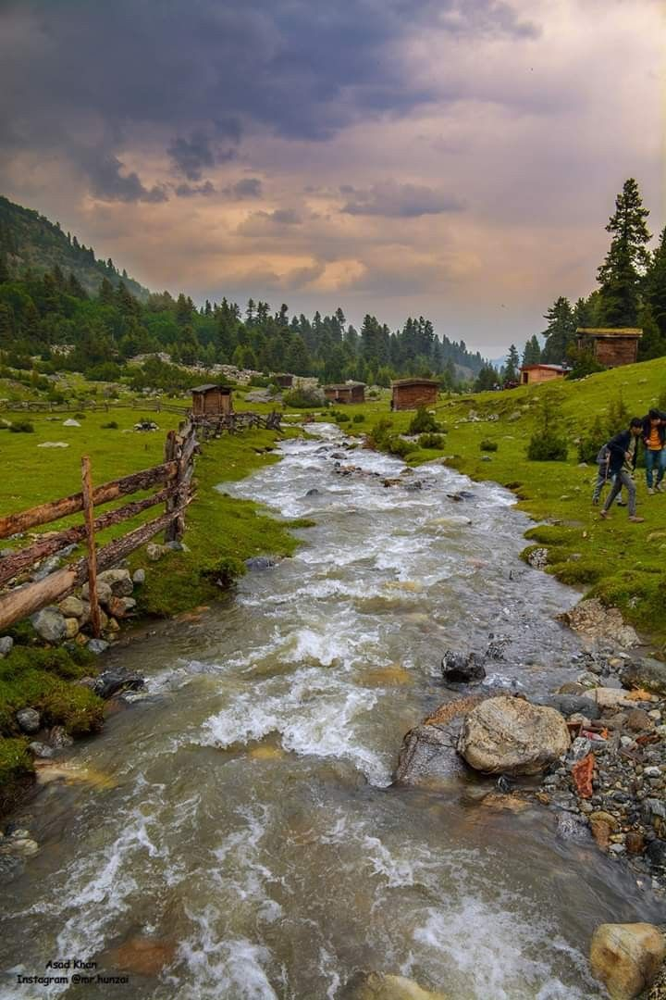
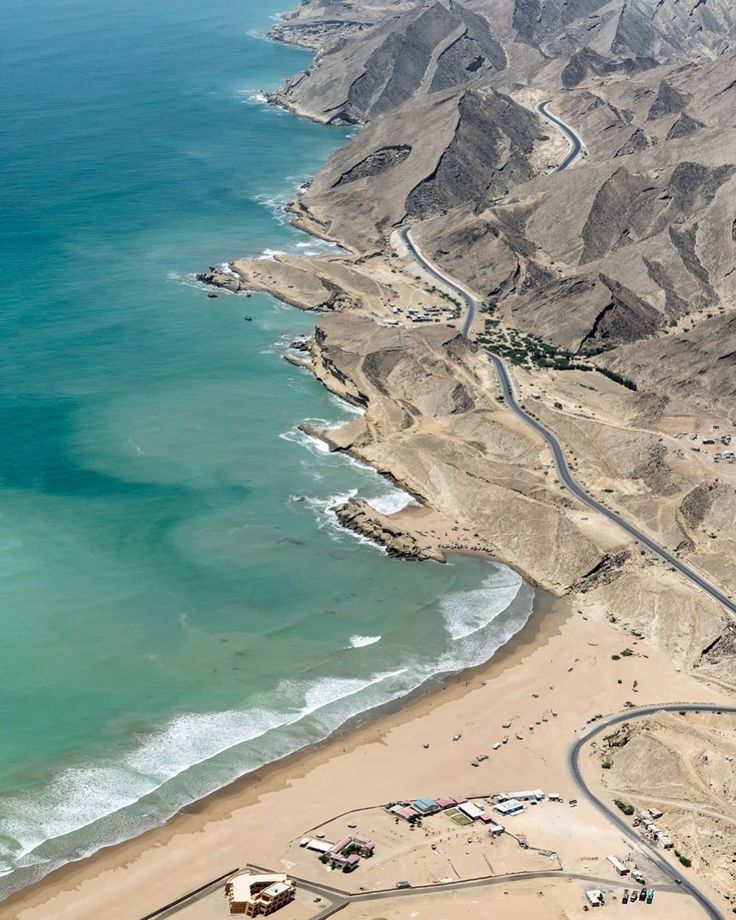
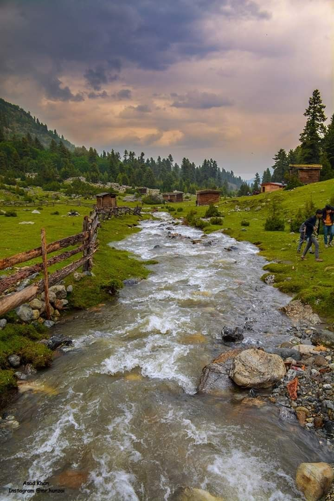
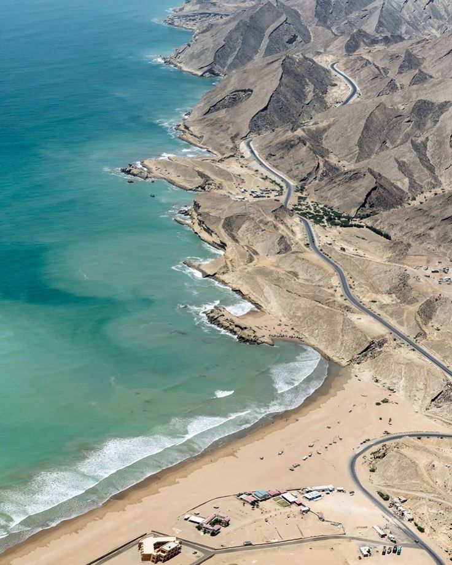
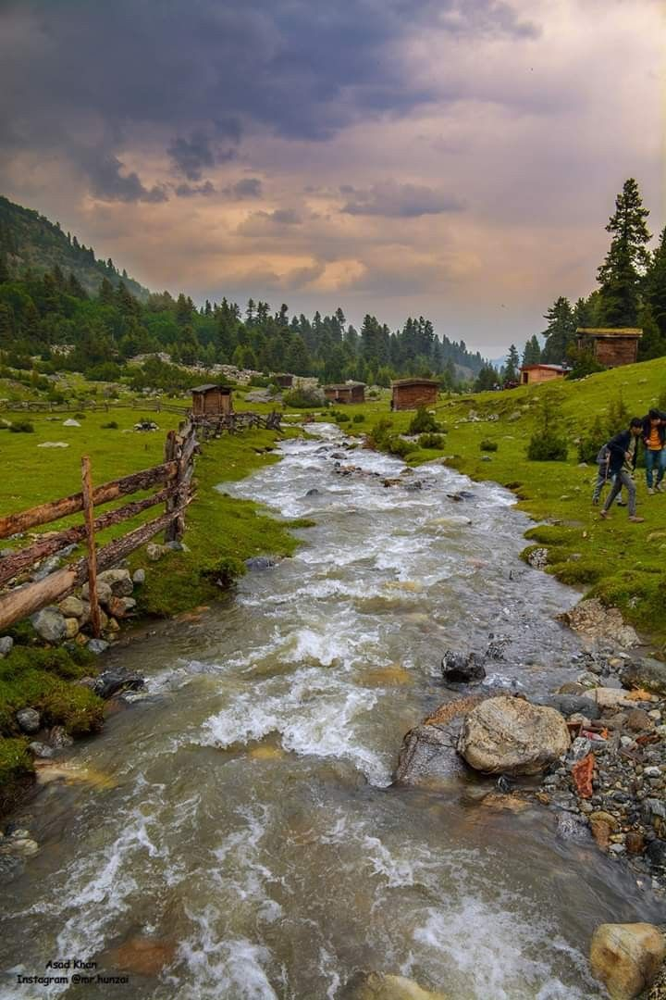
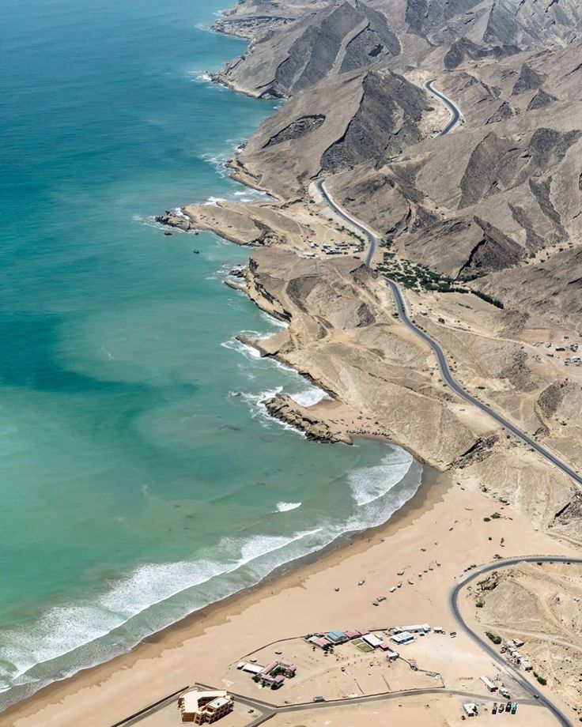
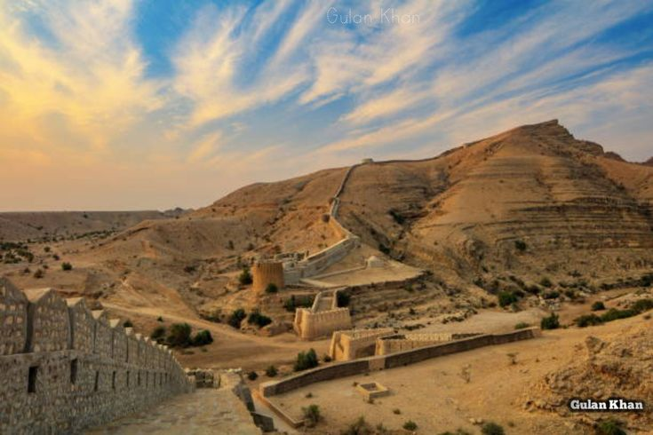
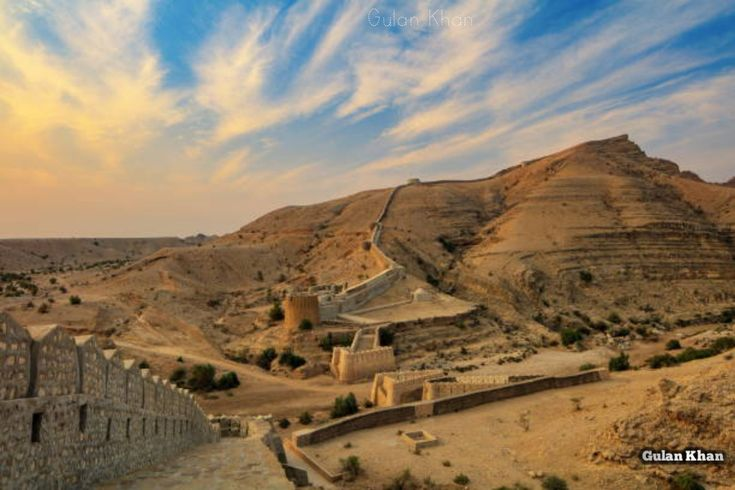

The tourism sectorplays an important role in the devolepment of any country. Fortunatly,pakistan is one of the counteries that have plenty of oppotunitieswhch can make pakistan a tourism paradise.Hight mountains,lush green valleys,vast plains,natural fresh lakes,holy sights of people of all faiths,archeology sites across the country with variety of cultural colors from around the world are in Pakistan.They have full potential to attract tourists
A brief description of Pakistan'tourist destinationis given below:
Tourist destinations full of natural scenery inculde Hunza valley,Deosai plains(baltistan),Naltar valley,Fairy medows,Nanga Parbat,K-2 Base camp,Kailash valley,Swat valley,Naran and Kaghan,Nathia gali,Beaches of Balochistan and Karachi etc..




 
